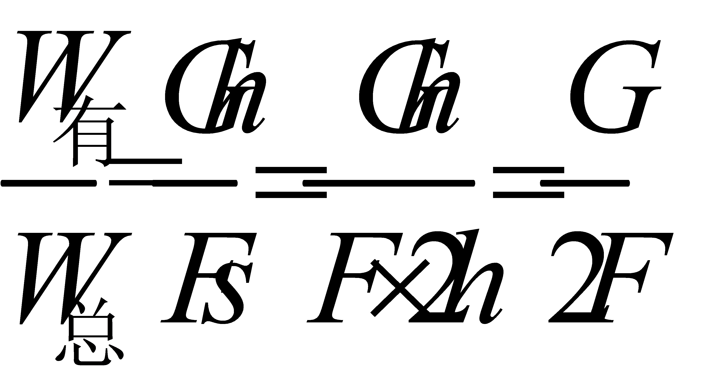
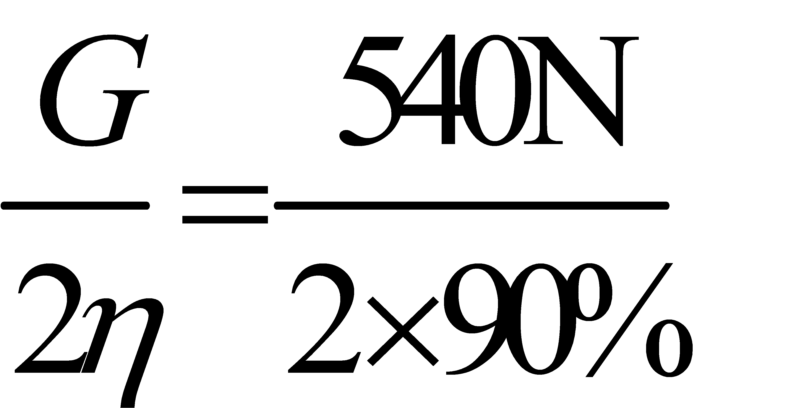
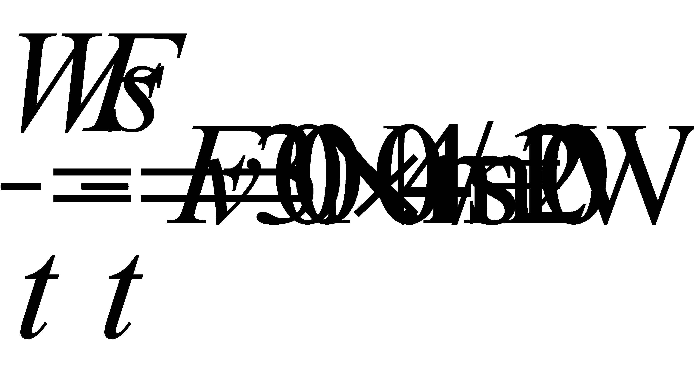

2020年北京市中考物理试题 · 选择题 第16、17、18、19、20题 · 对应解析
16.关于分子的热运动和分子之间的作用力，下列说法正确的是（ ）
A. 扩散现象说明分子是运动的
B. 固体之间也可以发生扩散现象
C. 液体很难被压缩，是由于液体分子间存在引力
D. 固体很难被拉伸，说明固体分子间只存在引力
【答案】AB
【解析】
【详解】A．扩散现象是由于分子在做不停息地无规则运动造成的，故A正确；
B．扩散现象是不同的物质相互接触时，彼此进入对方的现象，固体、液体、气体之间都可以发生扩散现象，故B正确。
CD．分子引力、和斥力同时存在，距离较近时，表现为斥力，距离较远时表现为引力；液体很难被压缩，是因为液体分子排列相对紧密，分子之间距离小，表现为斥力；固体很难被拉伸，是因为固体的分子排列规则且紧密，分子之间距离小，表现为斥力。故CD错误。
故选AB。
17.如图所示为游乐园的过山车运行的情境，下列说法正确的是（ ）

A. 过山车从高处加速滑下的过程中，动能增加
B. 过山车从高处加速滑下是由于受到惯性的作用
C. 过山车从低处上升的过程中，重力势能增加
D. 过山车从低处上升的过程中，重力势能转化为动能
【答案】AC
【解析】
【详解】A．过山车从高处加速滑下的过程中，质量不变，速度增大，所以动能增加，故A正确；
B．过山车从高处加速滑下是因为受重力的作用，故B错误；
C．过山车从低处上升的过程中，质量不变，高度升高，所以重力势能增加，故C正确；
D．过山车从低处上升的过程中，动能减小，重力势能增大，且克服阻力做功，将动能转化为重力势能和内能，故D错误。
故选AC。
18.某同学研究磁体周围的磁场情况，将一根条形磁体放在水平桌面上，在它周围放置一些小磁针，小磁针的指向情况如图甲所示；将小磁针拿掉之后，在条形磁体上面放一块有机玻璃，玻璃上均匀撒一层铁屑，轻轻敲打玻璃，可以看到铁屑的分布情况如图乙所示；根据甲图和乙图所示的实验现象，用磁感线描述条形磁体周围的磁场情况如图丙所示。下列说法正确的是（ ）

A. 图甲所示的实验，研究的是条形磁体周围的磁场方向特点
B. 图乙所示的实验，研究的是条形磁体周围的磁场分布特点
C. 图丙所示的条形磁体周围的磁感线，是人们为了描述磁场建立的物理模型
D. 由图丙可知，条形磁体周围的磁场是由磁感线组成的
【答案】ABC
【解析】
【详解】A．图甲中，条形磁体周围不同位置上放一些小磁针，小磁针N极所指的方向不同，可以研究条形磁体周围的磁场方向特点，故A正确；
B．图乙中，利用撒在磁体周围的铁屑可以判断该磁体周围磁场的分布，故B正确；
C．图丙中条形磁体周围的磁感线，是人们利用建模的方法画出来的并不真实存在的曲线，故C正确；
D．磁场是一种物质，为了描述磁场的分布引入了磁感线，磁感线其实不存在，故D错误。
故选ABC。
19.如图所示，在一个配有活塞的厚玻璃筒里放一小团硝化棉，迅速压下活塞，观察到硝化棉燃烧起来。关于该实验，下列说法正确的是（ ）

A. 硝化棉被点燃，表明筒内气体的温度升高
B. 下压活塞的过程中，筒内气体内能减小
C. 下压活塞的过程中，活塞对筒内气体做了功
D. 下压活塞的过程中，气体的内能转化为活塞的机械能
【答案】AC
【解析】
【详解】ABC．迅速压下活塞，此时活塞对筒内的空气做功，空气的内能变大，温度升高，空气和棉花之间发生热传递，使得棉花的温度升高，达到着火点，发生燃烧，故AC正确，B错误；
D．下压活塞时，活塞对筒内的空气做功，活塞的机械能转化为空气的内能，故D错误。
故选AC。
20.如图所示，滑轮组悬挂在水平支架上，某工人站在水平地面上，竖直向下拉动绳子自由端，使物体A以0.2m/s的速度匀速上升，提升过支架过程中滑轮组的机械效率为90%。已知物体A重540N，该工人重500N，两个滑轮质量相等，不计滑轮组的绳重和摩擦，关于该过程，下列说法正确的是（ ）

A. 绳子自由端受到竖直向下的拉力为200N
B. 绳子自由端拉力的功率为120W
C. 该工人对地面的压力为200N
D. 支架受到滑轮组的拉力为960N
【答案】BCD
【解析】
【详解】A．滑轮组的动滑轮绕2段绳，滑轮组的机械效率
η=

F=

=300N故A错误；
B．绳子自由端的速度
v绳=2v物=2×0.2m/s=0.4m/s
绳子自由端拉力的功率为
P=

故B正确；
C．地面对工人的支持力
F支=G-F=500N-300N=200N
由力的作用相互性可知工人对地面的压力等于地面对工人的支持力，即
F压=F支=200N
故C正确；
D．不计滑轮组的绳重和摩擦，拉力
F拉= (G+G动)
(G+G动)
G动=2F拉-G=2×300N-540N=60N
支架受到滑轮组的拉力为
F支架=3F+G动=3×300N+60N=960N
故D正确。
故选BCD。
三、实验解答题